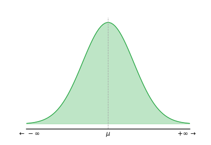

Properties of discrete and continuous probability distributions.
Relate probability distributions to data distributions
Introduce "language" for describing data and data distributions
Properties of discrete and continuous probability distributions.
Relate probability distributions to data distributions
Introduce "language" for describing data and data distributions
A probability distribution is a mathematical function that describes the likelihood of various outcomes in an experiment.
Discrete distributions are used when the set of possible outcomes is countable.

Individual probabilities are calculated with a PMF
Continuous distributions apply when outcomes come from a continuous random variable.
Outcome probability is calculated by integration (PDF)
The expectation (or expected value) of a random variable is a measure of the central tendency of its distribution.
For a random variable \( X \) with discrete outcomes \( x_i \) and corresponding probabilities \( P(X = x_i) \), the expectation is given by:
Consider a random variable with 2 equal bins:
How would the expectation change if the bins were unequal sizes
Scenario: You suspect a turbine in your power generation plant is faulty. You decide to run a test that puts it under a reduced load that has an acceptable failure rate of 60%, and you record the failures.
What is our statistical hypothesis, and how could we test it
Recall: $E[X] = \sum_{i=1} x_i \cdot P(X = x_i)$,
Thus, $E[X]=0\cdot(1-p)+1\cdot p$ $=0.4$ expected success rate
If I conduct 10 trails, how many success and failures should I expect? 4 & 6
After 10 tests, what is the observed probability?
After 500 tests, what is the observed probability?
And after 1000 tests, what can we say the expected value is? $\approx 14\%$ success
What can we say about our theoretical testing model
Scenario: a coin is flipped 28 times, resulting in 19 heads.
If the coin is "fair", how likely is this
Using the binomial distribution formula:
$P(X = 19) = \binom{28}{19} (0.5)^{19} (0.5)^{9}=\class{info}{0.0257}$
Is this evidence of an "unfair" coin
Assess how extreme our result is:
Model
Binomial Probability Distribution:$$P(X = k) = \binom{n}{k} p^k (1-p)^{n-k}$$ for $k={1,\ldots,28}$:
| 2 | 3 | 4 | 5 | 6 | 7 | |
| 3 | 4 | 5 | 6 | 7 | 8 | |
| 4 | 5 | 6 | 7 | 8 | 9 | |
| 5 | 6 | 7 | 8 | 9 | 10 | |
| 6 | 7 | 8 | 9 | 10 | 11 | |
| 7 | 8 | 9 | 10 | 11 | 12 |
| Sum | 2 | 3 | 4 | 5 | 6 | 7 | 8 | 9 | 10 | 11 | 12 |
|---|---|---|---|---|---|---|---|---|---|---|---|
| Frequency | 1 | 2 | 3 | 4 | 5 | 6 | 5 | 4 | 3 | 2 | 1 |
The normal (or Gaussian) distribution is a continuous probability distribution characterized by a symmetric, bell-shaped curve.
PDF:
$$f(\class{warning}{x}; \class{info}{\mu}, \class{info}{\sigma}) = \frac{1}{\sigma\sqrt{2\pi}} e^{-\frac{1}{2}\left(\frac{x-\mu}{\sigma}\right)^2}$$Often denoted $\mathcal{N}(\mu, \sigma^2)$, the normal distribution is special as it underscores the Central Limit Theorem's revelation that sums of independent variables universally converge to this form, regardless of their initial distributions.
Example: In a mechanical system, the stress endurance limit of a material is normally distributed with a mean ($\mu$) of 300 MPa and a standard deviation ($\sigma$) of 50 MPa.
What is the probability that a randomly selected material has a stress endurance limit at least as great as 350 MPa?
$P(X \geq 350) = 1 - P(X < 350) =$ $$1 - \int_{-\infty}^{350} f(x)\,dx$$
Where $f(x)\,dx$ is the PDF ($f(x;\mu,\, \sigma)$), then $\int_{-\infty}^{\infty} f(x)\,dx = 1$ is the cumulative density distribution.
A Cumulative Density Function (CDF) is a function that indicates the probability that a random variable takes on a value less than or equal to a given point. It's a way to describe the distribution of random variables, providing a complete picture of the probability distribution.
The CDF starts at 0 and increases to 1 as you move along the x-axis, with the rate of increase depending on the distribution of the variable. It gives insights into the percentiles and probabilities of the underlying distribution, making it a fundamental tool in statistics and probability theory.
A probability distribution is a mathematical function that describes the likelihood of various outcomes in an experiment.
Discrete distributions are used when the set of possible outcomes is countable.
Individual probabilities are calculated with a PMF
Continuous distributions apply when outcomes come from a continuous random variable.
Outcome probability is calculated by integration (PDF)
Expected Value
The mean outcome of a random variable over a large number of experiments or trials
Statistical Model
A mathematical representation that approximates the generation of observed data
Statistical Evidence
Data that supports or refutes a statistical hypothesis
Central Limit Theorem
States that the distribution of sample means approximates a normal distribution as the sample size becomes large
Sample Statistic
A numerical measure that describes an aspect of a sample
Probability Mass/Density Function
A function that gives the probabilities of discrete outcomes (mass function) or the likelihood of continuous outcomes (density function)
Cumulative Density Function
A function that gives the probability that a random variable is less than or equal to a certain value
Central Tendency (distribution)
The measure that indicates the central or expected value in a dataset
Random Variable
A function that assigns a real number to each outcome in the probability space
Discrete Variable
Random variable that measures outcomes at distinct or finite points
Continuous Variable
Random variable that measures outcomes at any value within a range of real numbers
Probability Distribution
A statistical function that describes all the possible values and likelihoods that a random variable can take within a given range
Discrete Probability Distribution
Used for discrete random variables. The probability of each possible outcome is specified by a probability mass function (PMF), with the probability of an outcome being exactly one ($x$) of the set ($S$) is calculated as $\sum_{x\in S}P(X=x)$
Continuous Probability Distribution
Applies to continuous random variables. The probabilities of specific outcomes are described by a probability density function (PDF), with the probability of an outcome within a certain range ($[a,\, b]$) calculated as the area under the curve: $P(a \leq X \leq b) = \int_{a}^{b} f(x) \, dx$